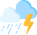

Night (also described as night time, unconventionally spelled as "nite") is the period of ambient darkness from sunset to sunrise during each 24-hour day, when the Sun is below the horizon. The exact time when night begins and ends depends on the location and varies throughout the year, based on factors such as season and latitude.
LightningLightning is a naturally occurring electrostatic discharge during which two electrically charged regions, both in the atmosphere or with one on the ground, temporarily neutralize themselves, causing the instantaneous release of an average of one gigajoule of energy.[1][2][3] This discharge may produce a wide range of electromagnetic radiation, from heat created by the rapid movement of electrons, to brilliant flashes of visible light in the form of black-body radiation. Lightning causes thunder, a sound from the shock wave which develops as gases in the vicinity of the discharge experience a sudden increase in pressure. Lightning occurs commonly during thunderstorms as well as other types of energetic weather systems, but volcanic lightning can also occur during volcanic eruptions.
Party CloudyIn meteorology, a cloud is an aerosol consisting of a visible mass of miniature liquid droplets, frozen crystals, or other particles suspended in the atmosphere of a planetary body or similar space.[2] Water or various other chemicals may compose the droplets and crystals. On Earth, clouds are formed as a result of saturation of the air when it is cooled to its dew point, or when it gains sufficient moisture (usually in the form of water vapor) from an adjacent source to raise the dew point to the ambient temperature.
Haze is traditionally an atmospheric phenomenon in which dust, smoke, and other dry particulates suspended in air obscure visibility and the clarity of the sky. The World Meteorological Organization manual of codes includes a classification of particulates causing horizontal obscuration into categories of fog, ice fog, steam fog, mist, haze, smoke, volcanic ash, dust, sand, and snow.[1] Sources for particles that cause haze include farming (ploughing in dry weather), traffic, industry, volcanic activity and wildfires. Seen from afar (e.g. an approaching airplane) and depending on the direction of view with respect to the Sun, haze may appear brownish or bluish, while mist tends to be bluish grey instead. Whereas haze often is thought of as a phenomenon occurring in dry air, mist formation is a phenomenon in saturated, humid air. However, haze particles may act as condensation nuclei that leads to the subsequent vapor condensation and formation of mist droplets; such forms of haze are known as "wet haze."
SunnySunny is a daytime weather condition.
SunsetSunset, also known as sundown, is the daily disappearance of the Sun below the horizon due to Earth's rotation. As viewed from everywhere on Earth (except the North and South poles), the equinox Sun sets due west at the moment of both the Spring and Autumn equinox. As viewed from the Northern Hemisphere, the sun sets to the northwest (or not at all) in the Northern hemisphere's spring and summer, and to the southwest in the autumn and winter; these seasons are reversed for the Southern Hemisphere.
WindWind is the natural movement of air or other gases relative to a planet's surface. Winds occur on a range of scales, from thunderstorm flows lasting tens of minutes, to local breezes generated by heating of land surfaces and lasting a few hours, to global winds resulting from the difference in absorption of solar energy between the climate zones on Earth. The two main causes of large-scale atmospheric circulation are the differential heating between the equator and the poles, and the rotation of the planet (Coriolis effect). Within the tropics and subtropics, thermal low circulations over terrain and high plateaus can drive monsoon circulations. In coastal areas the sea breeze/land breeze cycle can define local winds; in areas that have variable terrain, mountain and valley breezes can prevail.
Genus cirrus (Ci)Night (also described as night time, unconventionally spelled as "nite") is the period of ambient darkness from sunset to sunrise during each 24-hour day, when the Sun is below the horizon. The exact time when night begins and ends depends on the location and varies throughout the year, based on factors such as season and latitude.
Genus cirrocumulus (Cc)Lightning is a naturally occurring electrostatic discharge during which two electrically charged regions, both in the atmosphere or with one on the ground, temporarily neutralize themselves, causing the instantaneous release of an average of one gigajoule of energy.[1][2][3] This discharge may produce a wide range of electromagnetic radiation, from heat created by the rapid movement of electrons, to brilliant flashes of visible light in the form of black-body radiation. Lightning causes thunder, a sound from the shock wave which develops as gases in the vicinity of the discharge experience a sudden increase in pressure. Lightning occurs commonly during thunderstorms as well as other types of energetic weather systems, but volcanic lightning can also occur during volcanic eruptions.
Genus altocumulus (Ac)Haze is traditionally an atmospheric phenomenon in which dust, smoke, and other dry particulates suspended in air obscure visibility and the clarity of the sky. The World Meteorological Organization manual of codes includes a classification of particulates causing horizontal obscuration into categories of fog, ice fog, steam fog, mist, haze, smoke, volcanic ash, dust, sand, and snow.[1] Sources for particles that cause haze include farming (ploughing in dry weather), traffic, industry, volcanic activity and wildfires. Seen from afar (e.g. an approaching airplane) and depending on the direction of view with respect to the Sun, haze may appear brownish or bluish, while mist tends to be bluish grey instead. Whereas haze often is thought of as a phenomenon occurring in dry air, mist formation is a phenomenon in saturated, humid air. However, haze particles may act as condensation nuclei that leads to the subsequent vapor condensation and formation of mist droplets; such forms of haze are known as "wet haze."
Genus altostratus (As)Sunny is a daytime weather condition.
Night (also described as night time, unconventionally spelled as "nite") is the period of ambient darkness from sunset to sunrise during each 24-hour day, when the Sun is below the horizon. The exact time when night begins and ends depends on the location and varies throughout the year, based on factors such as season and latitude.
DrizzleLightning is a naturally occurring electrostatic discharge during which two electrically charged regions, both in the atmosphere or with one on the ground, temporarily neutralize themselves, causing the instantaneous release of an average of one gigajoule of energy.[1][2][3] This discharge may produce a wide range of electromagnetic radiation, from heat created by the rapid movement of electrons, to brilliant flashes of visible light in the form of black-body radiation. Lightning causes thunder, a sound from the shock wave which develops as gases in the vicinity of the discharge experience a sudden increase in pressure. Lightning occurs commonly during thunderstorms as well as other types of energetic weather systems, but volcanic lightning can also occur during volcanic eruptions.
Polar desertsIn meteorology, a cloud is an aerosol consisting of a visible mass of miniature liquid droplets, frozen crystals, or other particles suspended in the atmosphere of a planetary body or similar space.[2] Water or various other chemicals may compose the droplets and crystals. On Earth, clouds are formed as a result of saturation of the air when it is cooled to its dew point, or when it gains sufficient moisture (usually in the form of water vapor) from an adjacent source to raise the dew point to the ambient temperature.
RainforestsHaze is traditionally an atmospheric phenomenon in which dust, smoke, and other dry particulates suspended in air obscure visibility and the clarity of the sky. The World Meteorological Organization manual of codes includes a classification of particulates causing horizontal obscuration into categories of fog, ice fog, steam fog, mist, haze, smoke, volcanic ash, dust, sand, and snow.[1] Sources for particles that cause haze include farming (ploughing in dry weather), traffic, industry, volcanic activity and wildfires. Seen from afar (e.g. an approaching airplane) and depending on the direction of view with respect to the Sun, haze may appear brownish or bluish, while mist tends to be bluish grey instead. Whereas haze often is thought of as a phenomenon occurring in dry air, mist formation is a phenomenon in saturated, humid air. However, haze particles may act as condensation nuclei that leads to the subsequent vapor condensation and formation of mist droplets; such forms of haze are known as "wet haze."
MonsoonsSunny is a daytime weather condition.
Snow clouds usually occur in the context of larger weather systems, the most important of which is the low-pressure area, which typically incorporate warm and cold fronts as part of their circulation. Two additional and locally productive sources of snow are lake-effect (also sea-effect) storms and elevation effects, especially in mountains.
Mountain effectsOrographic or relief snowfall is created when moist air is forced up the windward side of mountain ranges by a large-scale wind flow. The lifting of moist air up the side of a mountain range results in adiabatic cooling, and ultimately condensation and precipitation. Moisture is gradually removed from the air by this process, leaving drier and warmer air on the descending, or leeward, side.[12] The resulting enhanced snowfall,[13] along with the decrease in temperature with elevation,[14] combine to increase snow depth and seasonal persistence of snowpack in snow-prone areas.